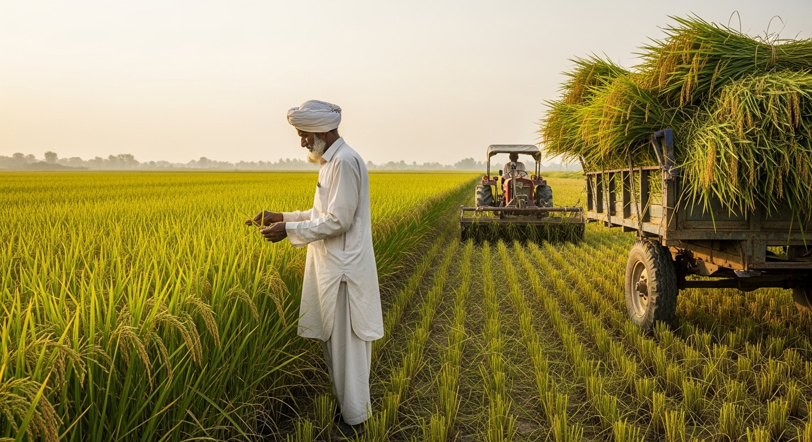
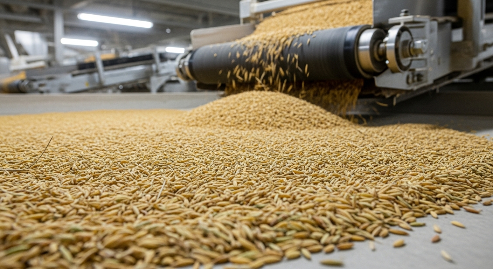
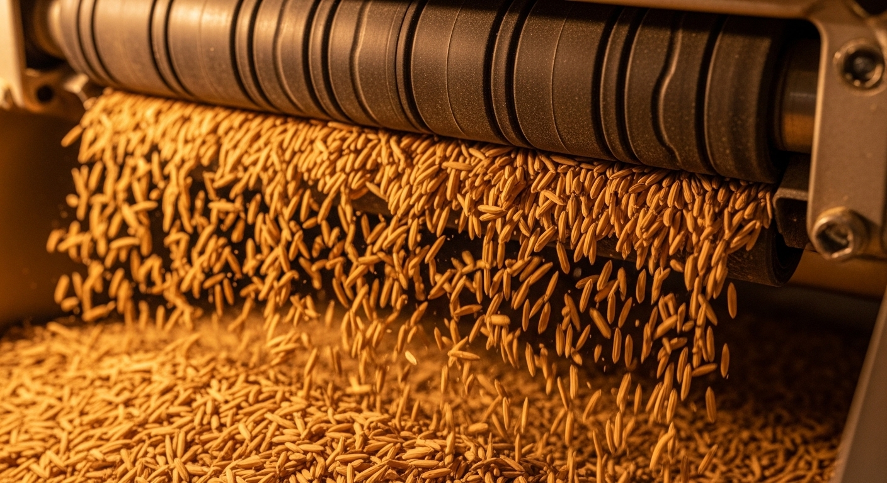
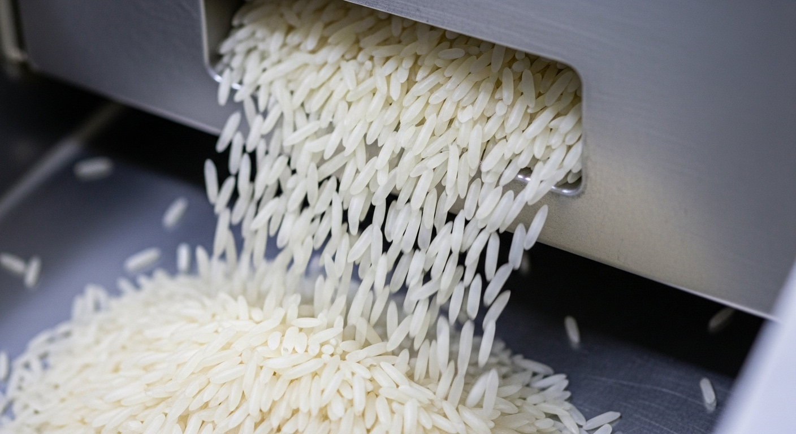
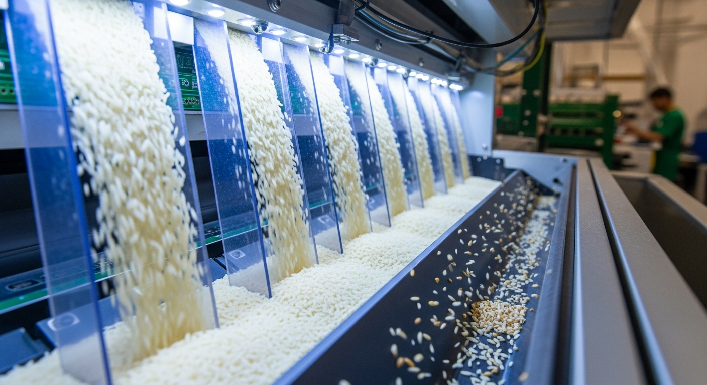
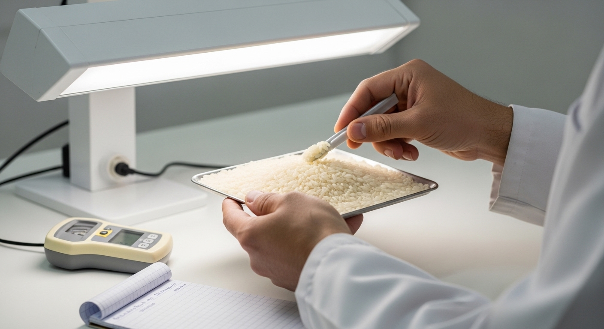
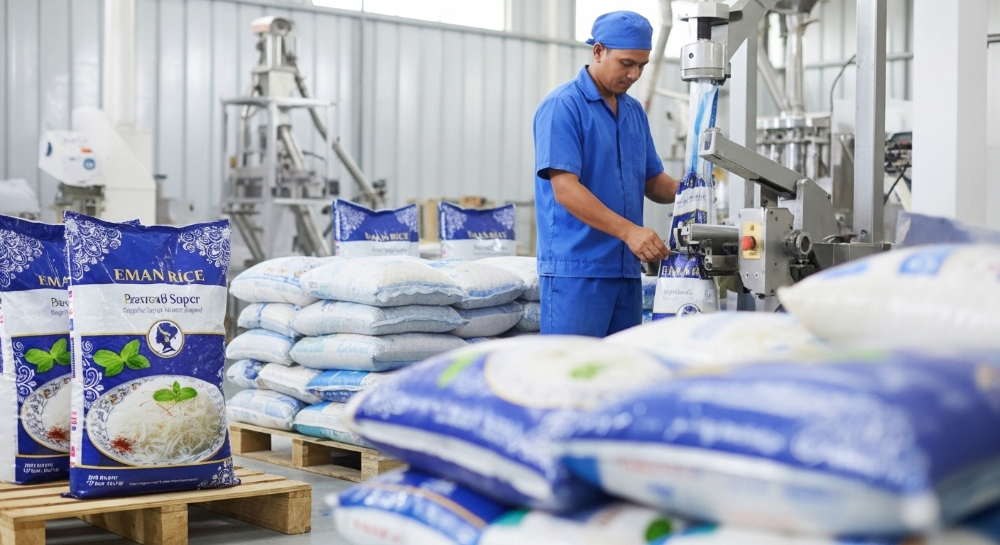

01
Step 1
Paddy Procurement
We source premium paddy directly from trusted farmers in Punjab's fertile regions, ensuring only the finest raw grain enters our facility.

Every step perfected. Every grain pure.
Process
At Eman Rice Mills, we believe that quality rice begins long before the packaging. Our end-to-end milling process is designed to preserve the natural purity, aroma, and nutritional value of every grain.
Step 1
We source premium paddy directly from trusted farmers in Punjab's fertile regions, ensuring only the finest raw grain enters our facility.

Step 2
Incoming paddy undergoes thorough mechanical cleaning to remove stones, chaff, and debris. Controlled drying reduces moisture to optimal milling levels.

Step 3
Our modern rubber-roller huskers gently remove the outer husk while preserving the bran layer, producing clean brown rice.

Step 4
Multi-stage whitening machines progressively remove the bran layers. Final polishing gives each grain its characteristic bright, smooth finish.

Step 5
Advanced optical color sorters and mechanical graders remove discolored, broken, or undersized grains, ensuring uniform grade and appearance.

Step 6
Every batch undergoes rigorous quality testing including moisture, whiteness, broken percentage, and aroma checks before approval.

Step 7
Approved rice is machine-packed in hygienically sealed bags of various sizes and dispatched swiftly to customers across Pakistan.

Each batch must meet our internal standards before it leaves the mill.
Clean processing spaces and controlled handling protect the grain.
Domestic supply focus helps us keep orders fresh and responsive.